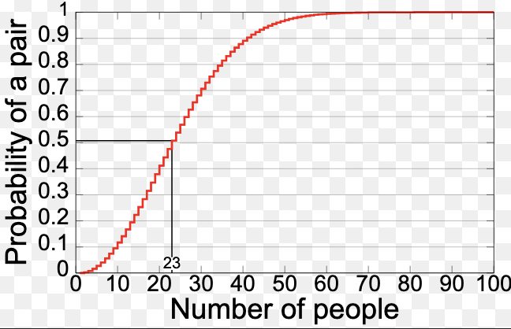
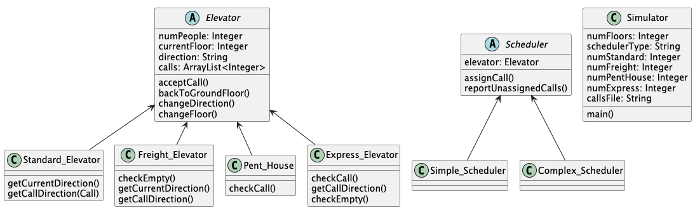
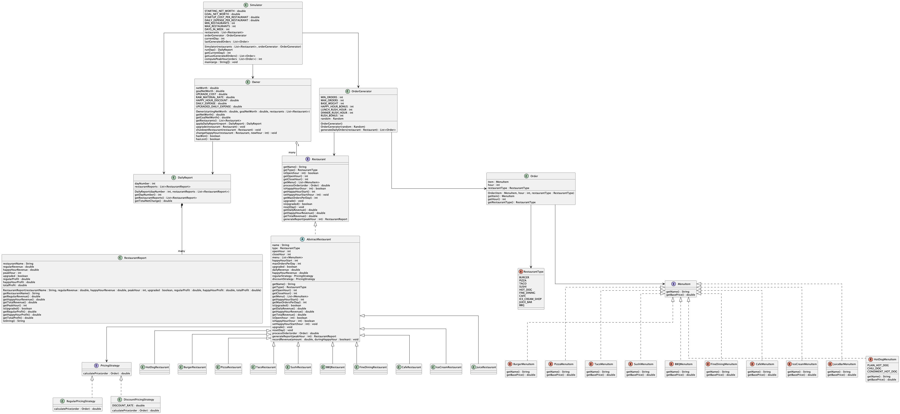

Hello! I am a San Diego native, Computer Science and Mathematics student at the Shiley-Marcos School of Engineering in the University of San Diego, who is passionate about tech, math, automation, data, nutrition, and business.
Professional info: Aspiring Machine Learning/Software Engineer, interested in driving innovation in business with customer centered big data solutions. I have half a year of professional experience as a Machine Learning Researcher, and one summer internship worth of experience as a Software Engineer. Visit my linkedin!
Hobbies: I enjoy sports, ecommerce, web dev, the beach, my dog, and the mountains on my free time.

Overview: The birthday paradox is a probability phenomenon showing that in a surprisingly small group of people, the chance that at least two share the same birthday is much higher than intuition suggests. Although many people assume you would need around 183 people (half of 365) for a 50% chance of a shared birthday, what we are showing/proving in the project is that the probability actually exceeds 50% with just 23 people in a room. This concept has application in probability theory, hashing and cryptography, as it illustrates how quickly collision probabilities can grow in large systems.
Design: This project creates an experiment, where the birthday paradox is tested with various numbers of people in a "room," and illustrates the probability of two people having the same birthday in that room. This will illustrate the different probabilities that two people have the same birthday associates with those respective number of people in the room.
Implementation: I was responsible for creating each instance of the random birthday objects, as well as the individual experiments which needed to be constructed in order to create 20 of those random objects, and then calculate the total probability that two people have the same birthday in those 20 experiments. This involved test-driven development and paired programming (as this was a partner project).
Outcomes: I learned how to do better paired programming, develop modular, readable and reusable code.

Overview: This project is a simulation of a multi-elevator system in a building. The goal was to design and implement a system where different types of elevators work together to efficiently service requests while following specific constraints
Design: The simulator supports multiple elevator types, including standard, freight, penthouse, and express elevators. Each type follows its own rules for which calls it can accept and how it moves throughout the building. A scheduler is responsible for assigning calls to elevators. There were two strategies implemented: a simple scheduler that assigns calls from left to right, and a complex scheduler that selects the elevator that can service the request in the fewest simulation rounds. The simulation runs step-by-step, where each round assigns at most one call and moves every elevator one floor. The program continues until all calls are completed and all elevators return to the ground floor.
Implementation: This project required the use of object-oriented design principles, including abstraction, inheritance, encapsulation, and polymorphism. It also involved implementing test-driven development and working collaboratively using GitHub.
Contributions: My main contribution to this project was implementing the full scheduling logic, as well as the simulation system. I also contributed to the elevator behavior system, and worked on both the simple and complex schedulers, as well as the simulator that drives the round-by-round execution. This process involved developing functionality for changing direction, IDLE states during pick up and drop off, and returning elevators to ground floor when inactive. In addition, the writing of unit tests allowed me to explore the testing infrastructure for elevator behavior and scheduler functionality. This project helped me better understand how different components interact in a larger object-oriented design.

This project is a simulation of a multi-restaurant management game. The goal was to design and implement a system where a player manages a portfolio of restaurants over a 7-day week, making strategic decisions to grow their net worth from $25,000 to $50,000. The simulator supports 10 restaurant types, including burger, pizza, taco, sushi, hot dog, fine dining, cafe, ice cream, juice bar, and BBQ. Each restaurant has its own menu, operating hours, happy hour, and maximum daily order capacity. Some restaurants operate overnight, requiring special handling of wraparound scheduling logic.
An order generator is responsible for simulating daily customer demand. It uses a weighted random system that skews order distribution toward rush hours (lunch and dinner) and each restaurant's happy hour slot, producing between 50 and 100 orders per day per restaurant. The simulation runs day-by-day, where each day generates orders, processes revenue, and applies profit calculations accounting for raw material costs, happy hour discounts, and daily operating expenses. Between days, the player can upgrade restaurants to increase their order capacity, permanently shut down underperforming restaurants, or adjust happy hour timing to maximize revenue.
Implementation: This project utilizes object-oriented design principles, including abstraction (abstract classes and mockito for testing), inheritance (interfaces and subclasses), encapsulation (access modifiers), and polymorphism (programming to the interface). It also involved the strategy design pattern for pricing, test-driven development, and collaborative and continuous integration using GitHub
My main contributions to this project were: contributing to the order generation system, developing the full game loop in the simulator, writing the restaurant class, and bridging the gap between game and market in the implementation. I worked on the profit calculation logic in the owner class, the discount strategy, and the day-by-day simulation that drives player interaction and game state. This helped me better understand how object-oriented components interact in a larger system and how design decisions made early in a project affect flexibility and maintainability later on in the development process.
santiguerrero@sandiego.edu